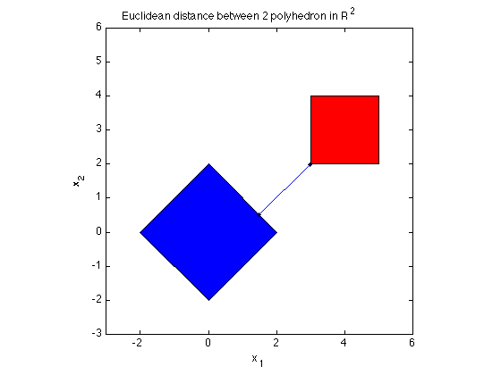

% Section 8.2.1, Boyd & Vandenberghe "Convex Optimization" % Joelle Skaf - 10/09/05 % (a figure is generated) % % Given two polyhedra C = {x | A1*x <= b1} and D = {x | A2*x <= b2}, the % distance between them is the optimal value of the problem: % minimize || x - y ||_2 % s.t. A1*x <= b1 % A2*y <= b2 % Note: here x is in R^2 % Input data randn('seed',0); n = 2; m = 2*n; A1 = randn(m,n); b1 = randn(m,1); A2 = randn(m,n); b2 = randn(m,1); fprintf(1,'Computing the distance between the 2 polyhedra...'); % Solution via CVX cvx_begin variables x(n) y(n) minimize (norm(x - y)) norm(x,1) <= 2; norm(y-[4;3],inf) <=1; cvx_end fprintf(1,'Done! \n'); % Displaying results disp('------------------------------------------------------------------'); disp('The distance between the 2 polyhedra C and D is: ' ); disp(['dist(C,D) = ' num2str(cvx_optval)]); disp('The optimal points are: ') disp('x = '); disp(x); disp('y = '); disp(y); %Plotting figure; fill([-2; 0; 2; 0],[0;2;0;-2],'b', [3;5;5;3],[2;2;4;4],'r') axis([-3 6 -3 6]) axis square hold on; plot(x(1),x(2),'k.') plot(y(1),y(2),'k.') plot([x(1) y(1)],[x(2) y(2)]) title('Euclidean distance between 2 polyhedron in R^2'); xlabel('x_1'); ylabel('x_2');
Computing the distance between the 2 polyhedra...
Calling sedumi: 15 variables, 5 equality constraints
------------------------------------------------------------
SeDuMi 1.21 by AdvOL, 2005-2008 and Jos F. Sturm, 1998-2003.
Alg = 2: xz-corrector, Adaptive Step-Differentiation, theta = 0.250, beta = 0.500
eqs m = 5, order n = 15, dim = 16, blocks = 2
nnz(A) = 23 + 0, nnz(ADA) = 17, nnz(L) = 12
it : b*y gap delta rate t/tP* t/tD* feas cg cg prec
0 : 5.33E+00 0.000
1 : -1.07E-01 1.65E+00 0.000 0.3105 0.9000 0.9000 2.24 1 1 2.6E+00
2 : 1.35E+00 4.81E-01 0.000 0.2907 0.9000 0.9000 0.96 1 1 7.8E-01
3 : 2.01E+00 1.02E-01 0.000 0.2131 0.9000 0.9000 1.34 1 1 1.4E-01
4 : 2.12E+00 3.39E-03 0.000 0.0331 0.9900 0.9900 1.05 1 1 4.5E-03
5 : 2.12E+00 2.90E-04 0.414 0.0855 0.9900 0.9900 1.00 1 1 3.8E-04
6 : 2.12E+00 5.11E-06 0.000 0.0176 0.9900 0.9903 1.00 1 1 1.3E-05
7 : 2.12E+00 3.04E-08 0.327 0.0060 0.9966 0.9990 1.00 1 1 5.9E-08
8 : 2.12E+00 9.48E-10 0.000 0.0312 0.9900 0.9902 1.00 1 1 2.2E-09
iter seconds digits c*x b*y
8 0.1 9.8 2.1213203395e+00 2.1213203392e+00
|Ax-b| = 8.0e-09, [Ay-c]_+ = 0.0E+00, |x|= 3.7e+00, |y|= 1.6e+00
Detailed timing (sec)
Pre IPM Post
1.000E-02 1.000E-01 0.000E+00
Max-norms: ||b||=4, ||c|| = 1,
Cholesky |add|=0, |skip| = 0, ||L.L|| = 1.
------------------------------------------------------------
Status: Solved
Optimal value (cvx_optval): +2.12132
Done!
------------------------------------------------------------------
The distance between the 2 polyhedra C and D is:
dist(C,D) = 2.1213
The optimal points are:
x =
1.5000
0.5000
y =
3.0000
2.0000
